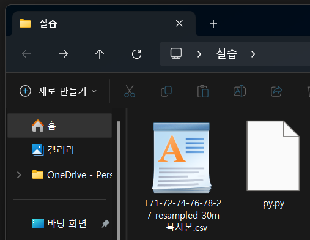
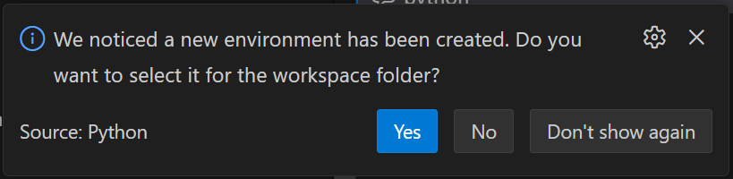

태양광 데이터 시각화
AI와 함께하는 실전 분석
데이터 시각화의 목적
- 대량의 데이터 세트 내 패턴 및 추세 식별
- 분석 결과의 객체성 확보 및 전달력 강화
- 데이터 이상치(Outlier) 및 분포의 직관적 파악
주요 라이브러리 사양
| 라이브러리 | 주요 기능 |
|---|---|
Pandas |
구조화된 데이터 조작 및 통계 분석 |
Matplotlib |
2D 정적 그래프 생성 및 맞춤형 레이아웃 설정 |
Seaborn |
고수준 인터페이스 기반 통계 그래픽 라이브러리 |
Step 1: AI 기반 자동 환경 구축
복잡한 수동 설정 대신 AI(Copilot)에게 전체 개발 환경 구성을 요청할 수 있습니다.
- 가상환경(venv) 생성 및 활성화
- 필수 라이브러리(Pandas, Seaborn 등) 일괄 설치
- 데이터 시각화를 위한 한글 폰트 및 라이브러리 설정
Step 2: 데이터 준비
실습에 사용할 원본 데이터를 확인하고 다운로드하십시오.
데이터 파일: F71-72-74-76-78-27-resampled-30m - 복사본.csv
(G열의 '발전량' 데이터를 시각화의 핵심 지표로 사용합니다.)
⚠️ 주의: 다운로드한 데이터 파일은 반드시 작성할 파이썬 스크립트(.py)와 같은 폴더에 있어야 합니다.

📥 실습 데이터 다운로드
Step 3: 초정밀 AI 프롬프트 실습
현업 수준의 실전 분석을 위해 Copilot에게 다음과 같이 명확하고 상세하게 요청하십시오.
나는 지금 Windows 환경에서F71-72-74-76-78-27-resampled-30m - 복사본.csv파일을 분석하려고 해. 다음 단계를 수행하는 완벽한 파이썬 코드를 작성해줘:
1. 환경 구축: 'analy-env'라는 가상환경을 만들고 활성화한 뒤, pandas, matplotlib, seaborn을 설치하는 터미널 명령어를 먼저 알려줘.
2. 데이터 로드: 위 CSV 파일을 pandas로 읽어와. 한글 인코딩(cp949)을 고려해서 불러오고, 데이터 구조를 확인해줘.
3. 데이터 전처리: 첫 번째 컬럼인 'REG_DATE'를 시계열(datetime) 형식으로 변환해줘.
4. 시각화: G열에 있는 '발전량' 데이터를 타겟으로 해서, 시간에 따른 발전량 변화를 선 그래프(lineplot)로 그려줘.
- 폰트는 'Malgun Gothic'으로 설정해서 한글이 안 깨지게 해줘.
- 그래프 제목은 '시간별 태양광 발전량 변화 추이'로 하고, x축 레이블이 겹치지 않게 회전시켜줘.
- 결과 그래프를 'solar_output_chart.png'로 저장하는 코드도 포함해줘.
가상환경 설정
Copilot이 가상환경을 만들었다면 아래처럼 VS Code에서 알림이 올 수 있습니다


Python 스크립트 실행 방법
VS Code 우측 상단의 '삼각형 아이콘'(Run Python File)을 클릭하여 코드를 실행할 수 있습니다.
- 단축키:
Ctrl + F5(디버깅 없이 실행) - 결과는 하단 터미널(Terminal) 창에 출력됩니다.
Step 4: 데이터 로드 및 확인 (코드 분석)
import pandas as pd
# CSV 파일 로드 (한글 깨짐 방지를 위해 cp949 인코딩 사용)
file_path = 'F71-72-74-76-78-27-resampled-30m - 복사본.csv'
df = pd.read_csv(file_path, encoding='cp949')
# 데이터 구조 확인 (G열 '발전량' 확인)
print(df.head())
print(df.info())Step 5: 발전량 시변화 시각화 (코드 분석)
import matplotlib.pyplot as plt
import seaborn as sns
# 한글 폰트 설정
plt.rcParams['font.family'] = 'Malgun Gothic'
# 시계열 데이터 시각화
plt.figure(figsize=(12, 6))
# REG_DATE를 x축으로, G열(발전량)을 y축으로 설정
sns.lineplot(x='REG_DATE', y=df.columns[6], data=df.head(100))
plt.title('시간대별 발전량 추이 (상위 100건)')
plt.xticks(rotation=45)
plt.show()결함 해결 (Troubleshooting)
| 오류 현상 | 해결 방안 |
|---|---|
| 글꼴 렌더링 오류 | 정확한 폰트 경로 지정 또는 시스템 폰트 설치 여부 확인 |
| FileNotFoundError | 파일 경로의 절대/상대 경로 일치 여부 확인 |
| ModuleNotFoundError | pip install 수행 여부 및 가상환경 인터프리터 일치 확인 |
발표 종료
다음 주제: 웹 데이터 수집 자동화